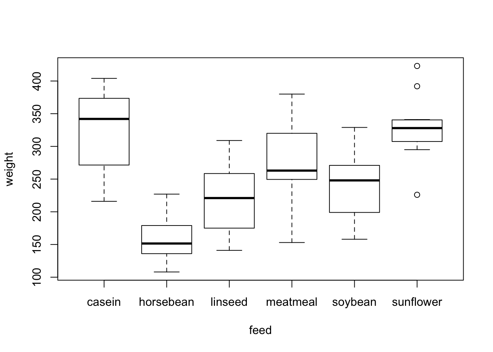
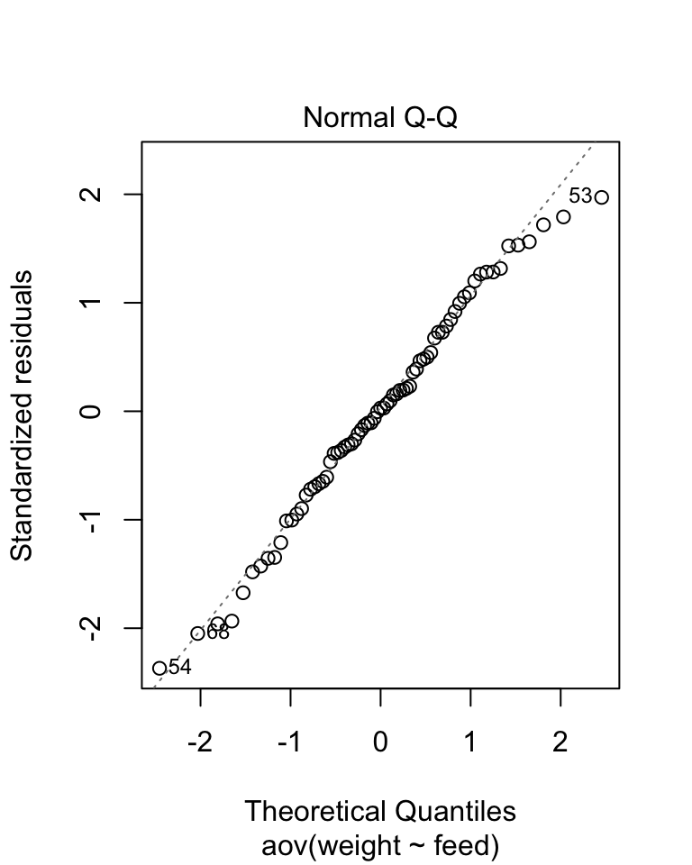
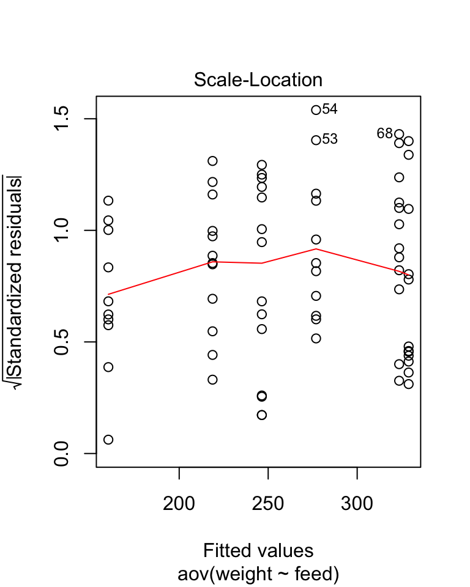
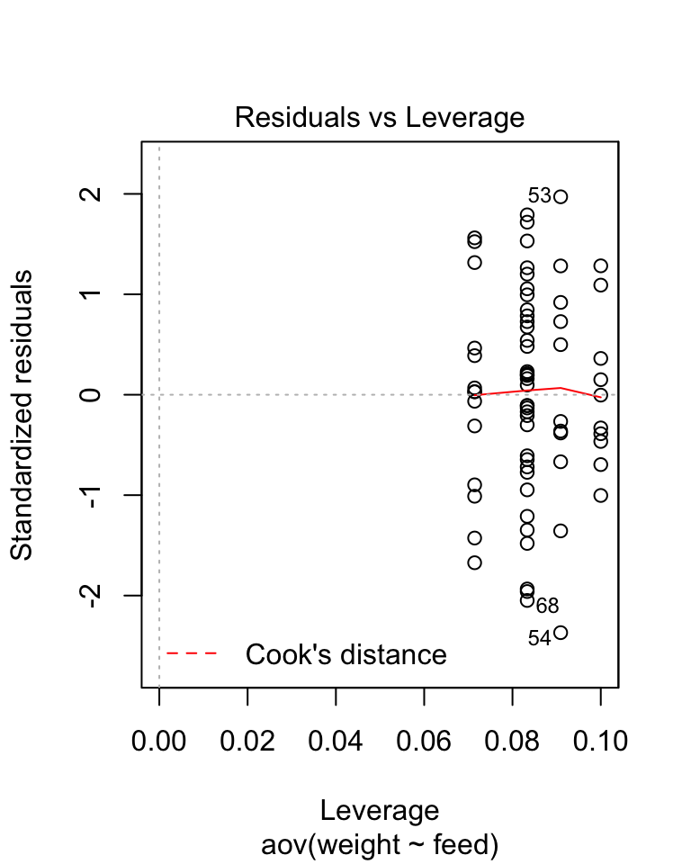
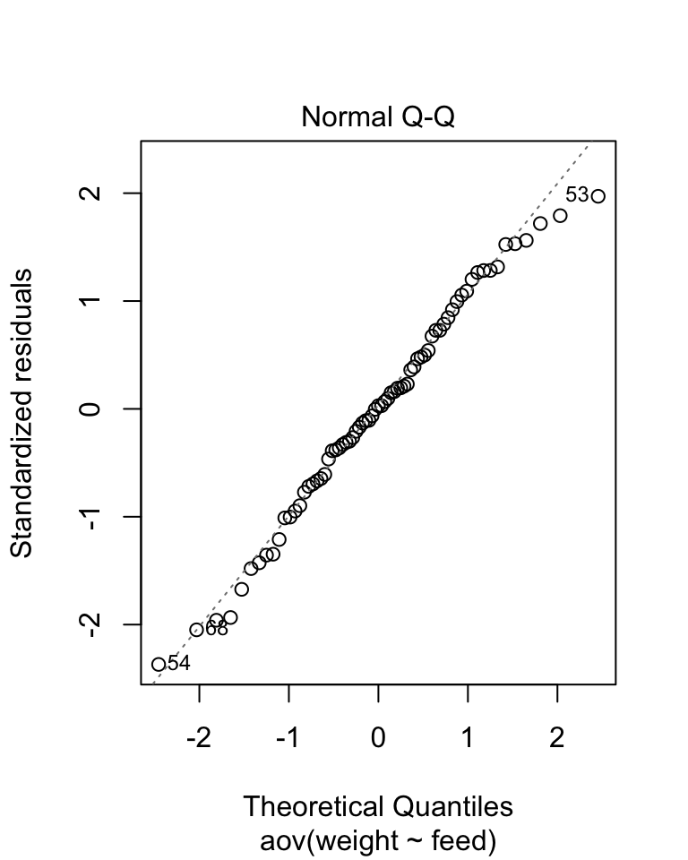
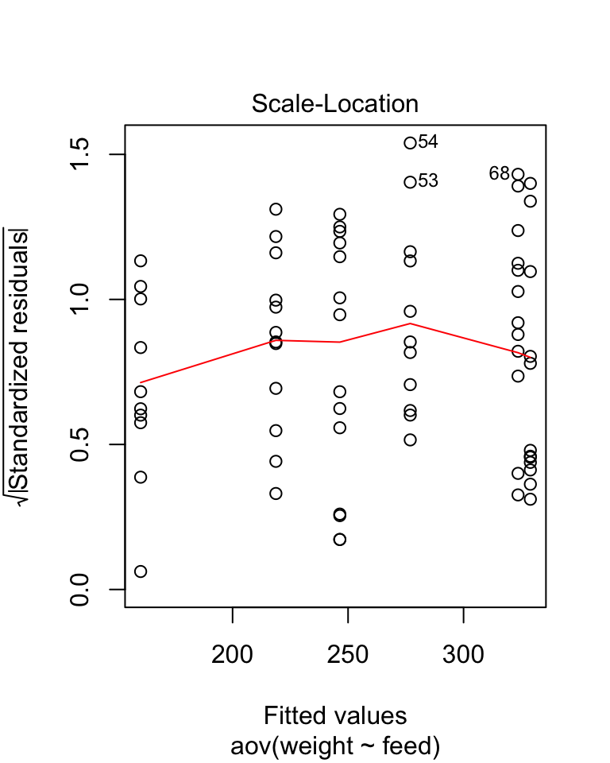
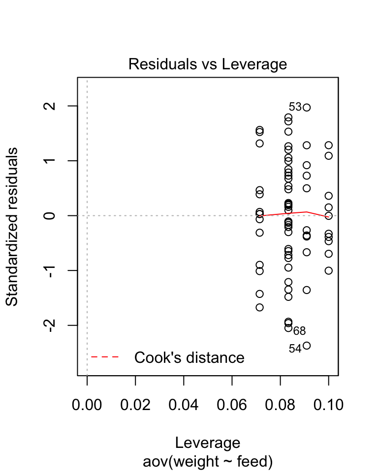
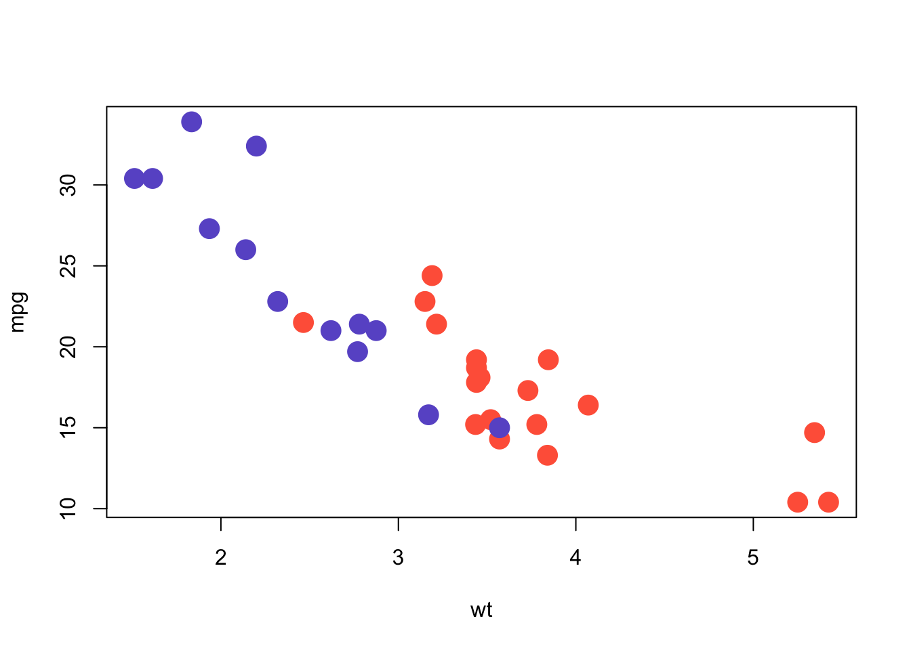
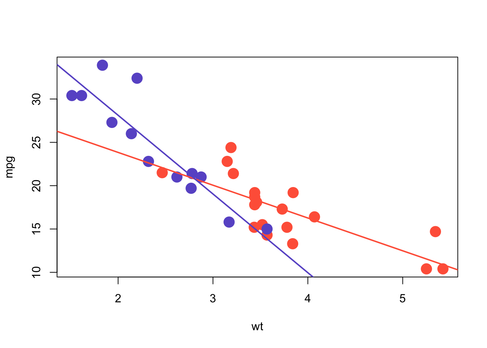

Module 6: Some Simple Stats
Dai Shizuka
updated 09/13/22
Many, if not most users of R take advantage of the powerful set of statistical tools available in the programming language. Particularly powerful are the myriad of user-generated packages (over 18,000 as of September 2022). It is pretty much true that, if there is a package for any conceivable type of statistical analysis!
There is no way that I can write modules to cover all of the types of statistical analyses out there. Here, my goal will be to outline the basics of how to conduct one of the most flexible and widely-used statistical analyses across biology: Linear Models. I will cover the basics of how to implement these in base R. Hopefully this will give you a baseline knowledge of how analyses work, and the basic syntax that is pretty common across most stats packages. I will also cover the basics of how to implement visualizations of statistical tests (where appropriate).
1. Types of statistical tests depend on types of data
It is worth first considering what kind of data you have, and which one(s) is/are predictor variable(s) and which one is the response variable.
1.1. What kind of data do you have?
Numbers
Continuous data: Numbers that can take on any value.
Binary data: Data that are 0/1 (e.g., death/survival, below/above a threshold, etc.)
Count data: Integers (e.g., number of plants, number of hits, etc.)
Proportion data: These can take a value between 0 and 1.
Factors (i.e., Categorical Data)
1.2. Predictor vs. response variable
Statistical analyses seek to determine the effect of the predictor variable(s) on a response variable (or, for multivariate analyses, multiple response variables).
Here are some of the most common scenarios:
If you have a continuous predictor AND continuous response variable… use linear regression or Generalized Linear Model (GLM) with Gaussian distribution
If you have a continuous predictor AND binary response variable… use GLM w/ “binomial” family (aka logistic regression)
If you have a continuous predictor AND counts as response variable… use GLM w/ “Poisson” family (aka Poisson regression)
If you have a continuous predictor AND proportions as response variable… use GLM w/ “binomial” or Quasi-binomial” family
If you have a categorical predictor AND continuous response variable… use ANOVA (or t-test, if you are just comparing means), which can be run as linear model or GLM.
If you have multiple predictors, with some continuous and some categorical variables… You can still use linear regression / GLM!
Everything is a GLM!
You will notice from above that everything I’ve listed falls under “GLM” or Generalized Linear Model. GLMs are super useful and flexible, and goes beyond a lot of the “parametric statistics” that you may first learn in basic stats class. It is one of the most common forms of statistical analyses in biology (I think… at least in my fields of ecology/evolution/behavior), so it is a good place to start!
2. Conducting and visualizing statistical results
Now, we will use some example data available from R packages to demonstrate how to implement different forms of GLMs. We will need the ggplot2 package for some of the datasets and for visualization, so let’s go ahead and load that package:
library(ggplot2)## Warning in register(): Can't find generic `scale_type` in package ggplot2 to
## register S3 method.2.1 Linear Regression, or “GLM with Gaussian link”
Let’s start by exploring the effect of one continuous variable on another continuous variable using a linear regression.
One easy way to think about linear regression is that it is appropriate whenever your predictor and response variables can be plotted as a scatterplot.
To demonstrate linear regression, we will use a dataset called
mtcars. This is a dataset on the performance of car models
from 1974 Motor Trend US magazine.
?mtcars
head(mtcars)## mpg cyl disp hp drat wt qsec vs am gear carb
## Mazda RX4 21.0 6 160 110 3.90 2.620 16.46 0 1 4 4
## Mazda RX4 Wag 21.0 6 160 110 3.90 2.875 17.02 0 1 4 4
## Datsun 710 22.8 4 108 93 3.85 2.320 18.61 1 1 4 1
## Hornet 4 Drive 21.4 6 258 110 3.08 3.215 19.44 1 0 3 1
## Hornet Sportabout 18.7 8 360 175 3.15 3.440 17.02 0 0 3 2
## Valiant 18.1 6 225 105 2.76 3.460 20.22 1 0 3 1First, let’s plot something… like the relationship between the weight of the car and its fuel efficiency
plot(mpg~wt, data=mtcars, pch=19)
You can see there is going to be some strong relationship here. Let’s
investigate this as a linear regression using the function
lm():
lm.mod=lm(mpg~wt, data=mtcars)
summary(lm.mod)##
## Call:
## lm(formula = mpg ~ wt, data = mtcars)
##
## Residuals:
## Min 1Q Median 3Q Max
## -4.5432 -2.3647 -0.1252 1.4096 6.8727
##
## Coefficients:
## Estimate Std. Error t value Pr(>|t|)
## (Intercept) 37.2851 1.8776 19.858 < 2e-16 ***
## wt -5.3445 0.5591 -9.559 1.29e-10 ***
## ---
## Signif. codes: 0 '***' 0.001 '**' 0.01 '*' 0.05 '.' 0.1 ' ' 1
##
## Residual standard error: 3.046 on 30 degrees of freedom
## Multiple R-squared: 0.7528, Adjusted R-squared: 0.7446
## F-statistic: 91.38 on 1 and 30 DF, p-value: 1.294e-10You can see this is a very strong relationship, with \(R^2 = 0.74\) and very low P-value.
We can plot this relationship onto the scatterplot:
plot(mpg~wt, data=mtcars, pch=19)
lm.mod=lm(mpg~wt, data=mtcars)
xv=seq(min(mtcars$wt), max(mtcars$wt), length=2)
yv=predict(lm.mod, data.frame(wt=xv))
lines(xv, yv)
2. ANOVA: Comparing a continuous variable across groups
2.1 A simple example with chickwts
Analysis of Variance (ANOVA) is a way to compare whether groups (e.g., different sites, different treatments, etc.) differ in some measured continuous variable. What ANOVA does is partition variation into within-group and across-group variation. We conclude that groups are different if the variation across groups is much larger than the variation within groups.
Let’s first start by plotting a bar plot and standard errors of the
means (SEMs) for the chickwts dataset, which is pre-loaded
in R. This dataset comes from an experiment where newly hatched chicks
were randomly allocated into 6 groups, and each group was fed with a
different feed supplement. The chicks were all weighed at 6 weeks
old.
Let’s check out the dataset first:
?chickwts #This will give you a help file that includes information about the dataset.
head(chickwts)## weight feed
## 1 179 horsebean
## 2 160 horsebean
## 3 136 horsebean
## 4 227 horsebean
## 5 217 horsebean
## 6 168 horsebeanNow let’s try plotting the data.
plot(weight~feed,data=chickwts)
We get the sense that there are some differences in chick weights
based on feed supplement. Let’s test this hypothesis with ANOVA using
the aov() function.
aov.mod=aov(weight~feed, data=chickwts)
summary(aov.mod)## Df Sum Sq Mean Sq F value Pr(>F)
## feed 5 231129 46226 15.37 5.94e-10 ***
## Residuals 65 195556 3009
## ---
## Signif. codes: 0 '***' 0.001 '**' 0.01 '*' 0.05 '.' 0.1 ' ' 1The output answers are major question: Yes, there is a significant difference between treatments.
2.2 Testing Assumptions of ANOVA
The second thing we’ll likely want to do is to test our assumptions. You can do this graphically:
plot(aov.mod) 

The first plot looks at residual vs. fitted values—if there are weird patterns here, e.g., the points “fan out” towards the right side of the plot, then you might have heteroscedasticity (variance differs across treatments with different means). The second plot looks for non- normality of errors. Ideally, you want this “qqplot” to look fairly straight. The third plot is the “standardized” (or “studentized”) residuals plotted against the fitted values—this should also look fairly flat. The fourth plot looks for patterns related to leverage, or the degree of influence a data point has on the patterns.
Another way to check for heteroscedasticity in the data is to use statistical tests, such as Bartlett test, Fligner-Killeen test, or Levene’s test. E.g.,
fligner.test(weight~feed,data=chickwts)##
## Fligner-Killeen test of homogeneity of variances
##
## data: weight by feed
## Fligner-Killeen:med chi-squared = 3.8109, df = 5, p-value = 0.577This test suggests that the groups have no significant differences in variance, so that’s good.
2.3 Posthoc tests
The above ANOVA analysis told us that there are differences among groups. However, that is not quite that useful. What we really want to know is which groups are different from each other? To ask this question, you need to conduct pairwise comparisons. You could do a series of two-sample t-tests, but this is not so robust when you do too many comparisons at once. A standard procedure for post-hoc multiple comparisons is the Tukey’s HSD (hostly significant difference) test. You can conduct that simply in R:
thsd=TukeyHSD(aov.mod)
thsd## Tukey multiple comparisons of means
## 95% family-wise confidence level
##
## Fit: aov(formula = weight ~ feed, data = chickwts)
##
## $feed
## diff lwr upr p adj
## horsebean-casein -163.383333 -232.346876 -94.41979 0.0000000
## linseed-casein -104.833333 -170.587491 -39.07918 0.0002100
## meatmeal-casein -46.674242 -113.906207 20.55772 0.3324584
## soybean-casein -77.154762 -140.517054 -13.79247 0.0083653
## sunflower-casein 5.333333 -60.420825 71.08749 0.9998902
## linseed-horsebean 58.550000 -10.413543 127.51354 0.1413329
## meatmeal-horsebean 116.709091 46.335105 187.08308 0.0001062
## soybean-horsebean 86.228571 19.541684 152.91546 0.0042167
## sunflower-horsebean 168.716667 99.753124 237.68021 0.0000000
## meatmeal-linseed 58.159091 -9.072873 125.39106 0.1276965
## soybean-linseed 27.678571 -35.683721 91.04086 0.7932853
## sunflower-linseed 110.166667 44.412509 175.92082 0.0000884
## soybean-meatmeal -30.480519 -95.375109 34.41407 0.7391356
## sunflower-meatmeal 52.007576 -15.224388 119.23954 0.2206962
## sunflower-soybean 82.488095 19.125803 145.85039 0.0038845This test suggests that there are significance difference between:
- linseed vs. casein
- soybean vs. casein
- meatmeal vs. horsebean
- soybean vs. horsebean
- sunflower vs. horsebean
- sunflower vs. linseed
- sunflower vs. soybean
Look at the boxplot again and see if those results make sense:
plot(weight~feed,data=chickwts)
| Test | Description | Function |
|---|---|---|
| Two-sample T-Test | Parametric test of means of two groups | t.test() |
| Mann-Whitney U-test | Non-parametric version of two-sample t | wilcox.test() |
| Kruskall-Wallis test | Non-parametric comparison of two or more groups | kruskal.test() |
| Welch’s test | ANOVA with relaxed assumption about heterogeneous variances | oneway.test() |
| Paired t-test | Two-sample t-test for repeated measures | t.test(paired=TRUE) |
| Wilcoxon signed-rank test | Nonparametric version of paired t | Wilcox.test(paired=TRUE) |
4. ANCOVA: Testing the effects of a continuous variable & a categorical factor
###4.1 Performing an ANCOVA
Continuing with the above example using mtcars … Let’s
look a little bit closer at the data. Now we will plot the relationship
between car weight and fuel efficiency, but looking at automatic
vs. manual transmission cars.
my.pal=c("tomato", "slateblue")
plot(mpg~wt, data=mtcars, pch=19, col=my.pal[as.numeric(mtcars$am)+1], cex=2)The mtcars$am variable is 0 = automatic and 1 = manual
(see help file ?mtcars). So the above code will put the
automatic transmission in “tomato” and manual transmission in
“slateblue”.
Overall, it seems that manual transmission is lighter, and it also tends to get better gas mileage. But is the relationship between weight and fuel efficiency different between the two transmission types? This is the question we can get at with an ANCOVA.
There are at least two ways to do this.
Option 1: Use aov() to fit model and see output using
summary()
mtcars$trans.type=factor(mtcars$am)
ancova.mod1=aov(mpg~wt*trans.type, data=mtcars)
summary(ancova.mod1)## Df Sum Sq Mean Sq F value Pr(>F)
## wt 1 847.7 847.7 126.25 6.92e-12 ***
## trans.type 1 0.0 0.0 0.00 0.98556
## wt:trans.type 1 90.3 90.3 13.45 0.00102 **
## Residuals 28 188.0 6.7
## ---
## Signif. codes: 0 '***' 0.001 '**' 0.01 '*' 0.05 '.' 0.1 ' ' 1Option 1: Use lm() to fit model and use
anova() to see output
ancova.mod2=lm(mpg~wt*trans.type, data=mtcars)
anova(ancova.mod2)## Analysis of Variance Table
##
## Response: mpg
## Df Sum Sq Mean Sq F value Pr(>F)
## wt 1 847.73 847.73 126.2518 6.915e-12 ***
## trans.type 1 0.00 0.00 0.0003 0.985556
## wt:trans.type 1 90.31 90.31 13.4502 0.001017 **
## Residuals 28 188.01 6.71
## ---
## Signif. codes: 0 '***' 0.001 '**' 0.01 '*' 0.05 '.' 0.1 ' ' 1You can see that they give you identical results (with one-digit difference in rounding).
4.2 Plotting the results
Ok, so the above results suggest that there is some interaction effect between weight and transmission type on fuel efficiency. Let’s visualize this by running two linear models independently on each transmission type and then drawing the model fits on top of the scatter plots.
auto.dat=subset(mtcars, am==0)
manu.dat=subset(mtcars, am==1)
lm.auto=lm(mpg~wt, data=auto.dat)
lm.manu=lm(mpg~wt, data=manu.dat)
my.pal=c("tomato", "slateblue")
plot(mpg~wt, data=mtcars, pch=19, col=my.pal[as.numeric(mtcars$am)+1], cex=2)
abline(lm.auto, col="tomato", lwd=2)
abline(lm.manu, col="slateblue", lwd=2)
A more complicated routine, but a prettier plot:
my.pal=c("tomato", "slateblue")
plot(mpg~wt, data=mtcars, pch=19, col=my.pal[as.numeric(mtcars$am)+1], cex=2)
xv0=seq(min(auto.dat$wt), max(auto.dat$wt), length=10)
yv0=predict(lm.auto, data.frame(wt=xv0))
lines(xv0, yv0, col="tomato", lwd=2)
xv1=seq(min(manu.dat$wt), max(manu.dat$wt), length=11)
yv1=predict(lm.manu, data.frame(wt=xv1))
lines(xv1, yv1, col="slateblue", lty=2, lwd=2)Linear Mixed Models
Mixed effects models are often used to analyze ‘nested’ or ‘hierarchical’ data. For example, in a repeated measures design, the same measurement is taken from a subject over different times and perhaps different treatments. If your objective is to understand the overall effects of time or treatment, then you want to account for variations among individuals.
There are several packages for conducting mixed-effects models in R.
Perhaps the most commonly used package is lme4(). Use the
codes below to load the package, learn about one of the datasets that
come with the package (called sleepstudy) and a simple use
of the lmer() function to conduct a mixed model
analysis.
Downloading and installing packages
To do this part, you will need to download and install a stats package that can handle linear mixed-effects models. The one we will use here is
lme4.
You can install this package by running the command:
install.packages('lme4')In addition, we will use thelmerTestpackage to generate a P-value from the linear mixed-effects model. To install that package, runinstall.packages('lmerTest')
library(lme4)
library(lmerTest)
?sleepstudymix.mod1=lmer(Reaction~Days+ (Days|Subject), data=sleepstudy) #mixed effects model of Days, with Days nested in Subject as random effect summary(mix.mod1) #summary of lmer output does not give you p-values
anova(mix.mod1)## Type III Analysis of Variance Table with Satterthwaite's method
## Sum Sq Mean Sq NumDF DenDF F value Pr(>F)
## Days 30024 30024 1 16.995 45.843 3.273e-06 ***
## ---
## Signif. codes: 0 '***' 0.001 '**' 0.01 '*' 0.05 '.' 0.1 ' ' 1